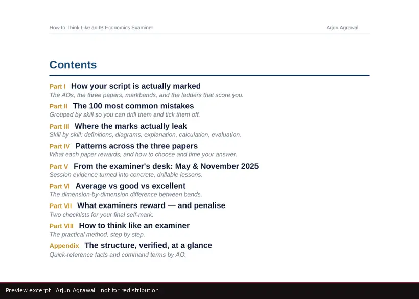
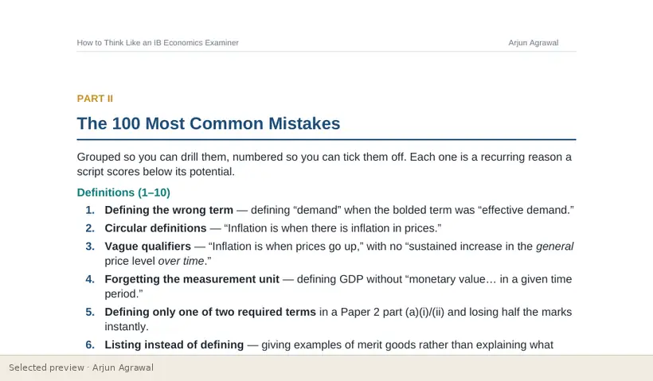

Home / Resource Studio / How to Think Like an IB Economics Examiner
Guide · assessment, SL and HL
How to Think Like an IB Economics Examiner
A scoring guide that explains how scripts are marked and turns that into habits a student can practise: the assessment objectives, the three papers, the markband ladders, and one hundred common mistakes grouped by skill.
- Type
- Guides
- Format
- Written guide: 21 pages
- Level
- SL and HL
- For
- Students, Teachers
- Topics
- Assessment, Markbands, Common mistakes, Paper 1, Paper 2, Paper 3


What it helps learners do
- Understand how extended responses are marked against markbands
- Recognise the most common ways marks are lost, skill by skill
- Plan, write and review answers the way an examiner reads them
- Know what separates an average answer from a good and an excellent one
The thinking behind it
It starts from how marking actually works and works back to what a student should do. The mistakes are numbered and grouped by skill (definitions, diagrams, explanation, evaluation, calculation, examples) so they can be drilled and ticked off.
What the complete resource contains
- Part I: how your script is actually marked
- Part II: the 100 most common mistakes, grouped by skill
- Part III: where the marks leak, skill by skill
- Part IV: patterns across the three papers
- Part V: what the most recent sessions showed
- Parts VI to VIII: average against good against excellent, what is rewarded and penalised, and how to think like an examiner
- Appendix: the structure of the assessment at a glance
Interested in exploring more?
This page shows a small selection of excerpts. The complete resource is not published online. If you are a teacher, a student or a school interested in it, please get in touch, and I will reply personally.
Ask about this resourceOpen it in the StudioOn the platform
Independent resources by Arjun Agrawal. They are not produced or endorsed by the International Baccalaureate Organization, and none of the questions shown is an IB examination question.